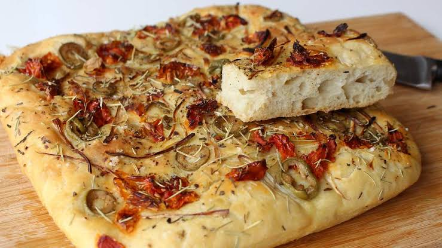

Focaccia italiana

La focaccia es uno de los panes más conocidos de la gastronomía italiana. Su exterior ligeramente crujiente y su interior esponjoso la convierten en una excelente opción para acompañar sopas, ensaladas y otros platos. Gracias a la combinación del aceite de oliva, el romero y la sal gruesa, la focaccia adquiere un sabor inconfundible que la ha convertido en una de las preparaciones más populares de Italia.